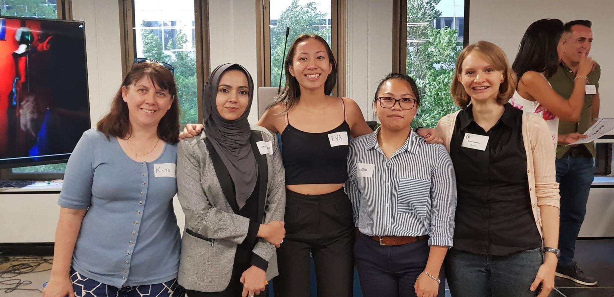
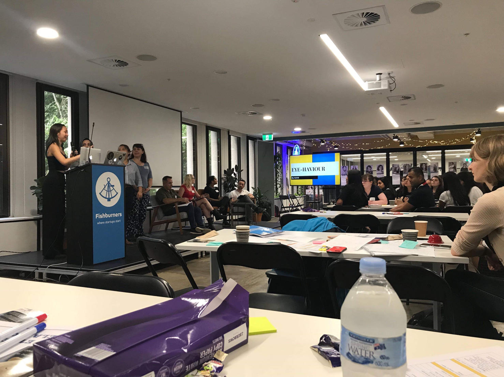

Had a great time today at the Women2Hack Academy Cyber Hackera event.
It was a great experience learning more about cybersecurity; the opportunities available to us women in cybersecurity; being able to design a creative solution for passwordless authentication as well as present these ideas; and meeting the mentors, speakers and others who also shared the same interests.
The event couldn’t have been any better without the work of the mentors and other industry professionals. Last of all I couldn’t have asked for a better team to work with today on our presentation!
#cyberhackera #women2hack #cybersecurity

22/03/2019
I was fortunate enough to have competed in the UTS Cyber Security Society (CSEC) CTF challenge with my teammates Eva Chen, Vincent Akena and Jonathan Mifsud.
The night was rewarding and great fun being able to learn how to crack various types of CTF challenges on our own and solving these challenges as a team. The night started with us not knowing how to hack and ended with my team coming second out of 44 teams!
Thanks to my teammates because without them the night wouldn’t have been as fun, and to UTS Cyber Security Society (CSEC) for organising the event. Looking forward to future CTF challenges and hopefully compete in the Cyber Security Challenge Australia (CySCA)!